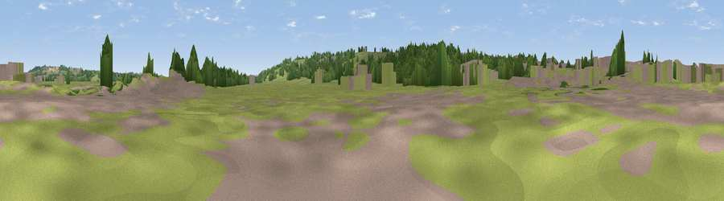

Viewpoint near Uttoxeter
#45945 in England · top 99% of its area beats it · near Uttoxeter · path 173 mWhere it is
The exact computed spot (SK 09975 33140). Click the marker for map links.
Public access: the nearest public right of way is about 173 m away — the final stretch may cross private land. Computed from Natural England's CRoW access layer and OpenStreetMap rights of way — not the legal definitive map. Always verify locally.
The view, rendered

A 360° render of this exact spot computed from the terrain model, tree cover and land cover — summer colours, afternoon light, calibrated against photographs of famous viewpoints. Real trees, hedges and buildings will differ in detail.
The panorama
Grey silhouette: terrain skyline in each direction (720 bearings, Earth curvature and refraction included). Dashed green: skyline with trees (+15 m) and buildings (+8 m) as obstacles. Blue strip: how far the ground is visible on each bearing.
Where the view opens
Wedge length = distance to the farthest visible ground on that bearing (vegetation-aware). Rings at 10, 25 and 50 km.
What fills the view
58% grassland · 25% woodland · 15% built-up · 1% cropland
Angular shares of the visible panorama (visual magnitude), not map area. Landscape diversity 0.43 (0–1 Shannon).
Key numbers
More beautiful places nearby
The staircase of upgrades: each row has a higher view potential than everything closer. Driving times are estimates from straight-line distance, calibrated against real road routing — check an actual route before setting out.
| Place | Direction | Drive | Score |
|---|---|---|---|
| Viewpoint near Uttoxeter | SSE · 1 km | ~4 min | 41.0 |
| Viewpoint near Doveridge | NNE · 3 km | ~8 min | 46.2 |
| Viewpoint near Rocester | NNE · 5 km | ~11 min | 48.3 |
| Viewpoint near Marchington Woodlands | S · 5 km | ~11 min | 50.6 |
| Viewpoint near Marchington | SE · 6 km | ~12 min | 52.0 |
| Viewpoint near Hollington | NW · 8 km | ~15 min | 53.8 |
| Viewpoint near Hanbury | SE · 8 km | ~17 min | 54.7 |
| Viewpoint near Cheadle | NW · 11 km | ~22 min | 61.0 |
52.89562, -1.85317 · source: osm viewpoint · position refined by local search. Computed location — check access rights before visiting.